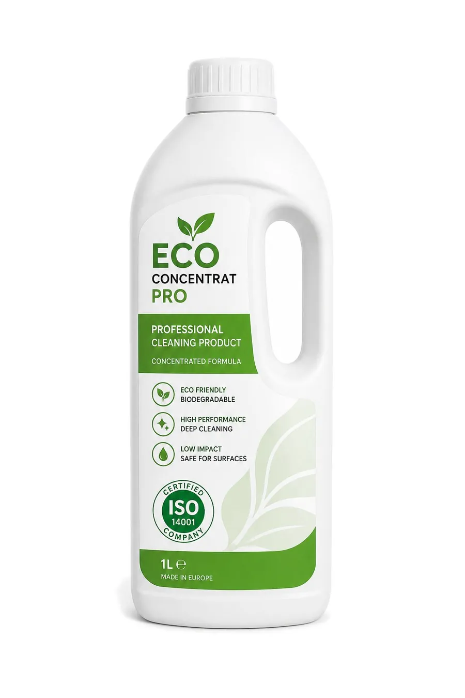

ECO Concentrat Pro
12,50 € / garrafa 5 L
Concentrado multiusos ×3 formulado con tensioactivos biodegradables de origen vegetal. Un litro genera hasta cuatro de producto de uso una vez diluido, reduciendo hasta un 70% los envases, el transporte y el espacio de almacenamiento frente a un limpiador convencional. Certificado ISO 14001, es nuestra opción más versátil para superficies y suelos en cualquier sector profesional.
Ver en la tienda HIGIENEX